A first aid app for people who have never been trained, designed to stay clear in the minutes when it matters.
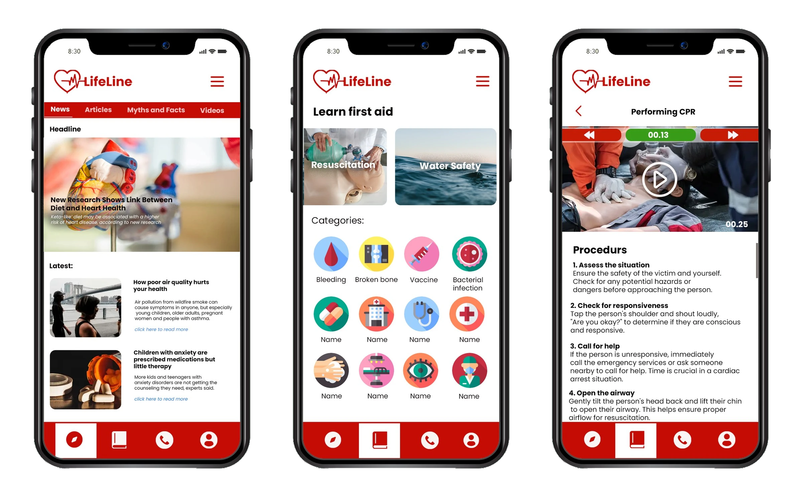
It happened on a field trip with friends and family. I managed to swallow it in the end, but I avoided beef for years afterwards. The first minutes after an accident are critical, and that day nobody at the table could use them.
That experience is why I wanted to make first aid knowledge easier to reach. I believe it should be accessible to everyone, everywhere, because emergencies can happen anywhere and at any time.
A Google Forms survey on first aid education in my community. 46.2% of respondents were aged 35 to 40, a group known for being proactive about their well-being and carrying higher responsibilities.
People agree first aid matters but know little beyond basic wound care. Only one respondent had formal training. What stops them is split almost evenly: information is hard to find, instructions are unclear, and resources are limited (23.1% each), then unreliable information (19.2%) and no internet when needed (11.5%).
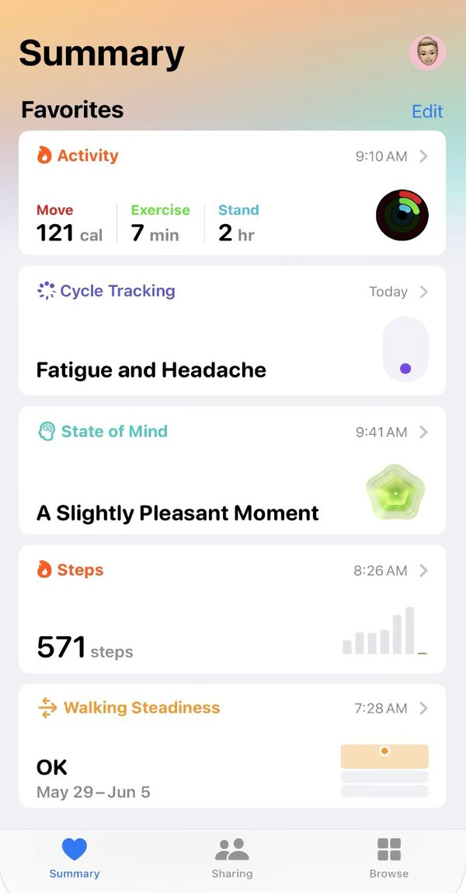
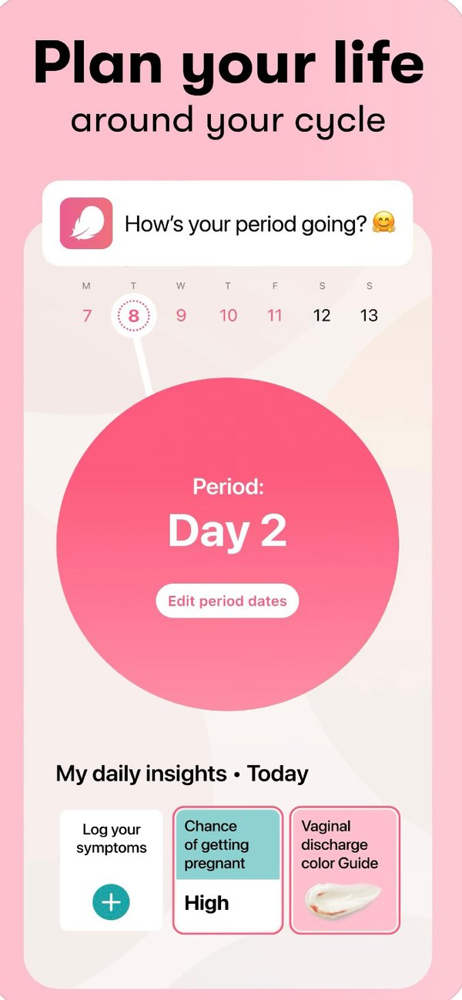
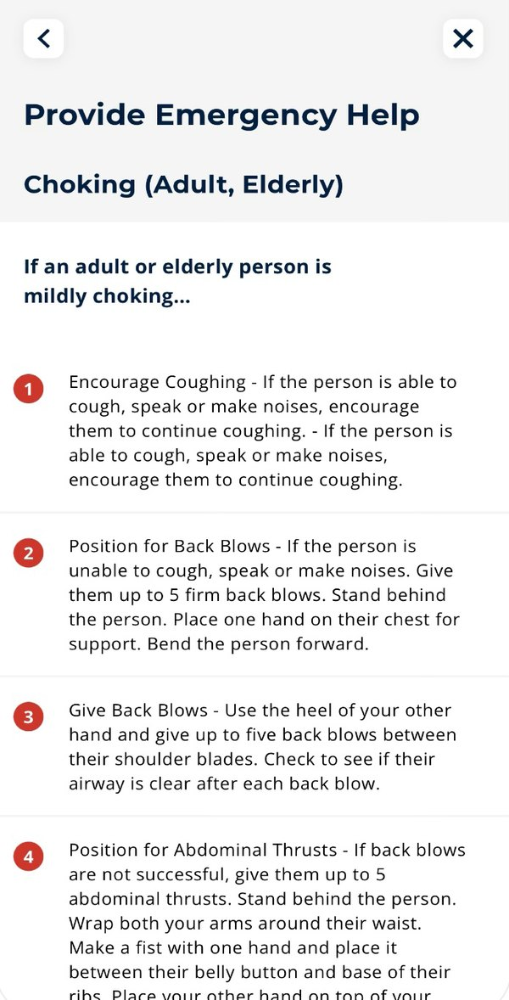
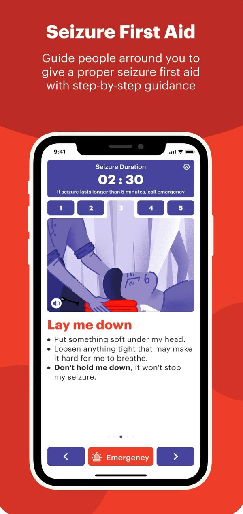
The app opens on its logo, then a home with Discover, Insights, Call and Profile arranged left to right. One safeguard sits in the flow: if an emergency contact has not responded after three notifications, the app directs the user to a call button for nearby emergency services.
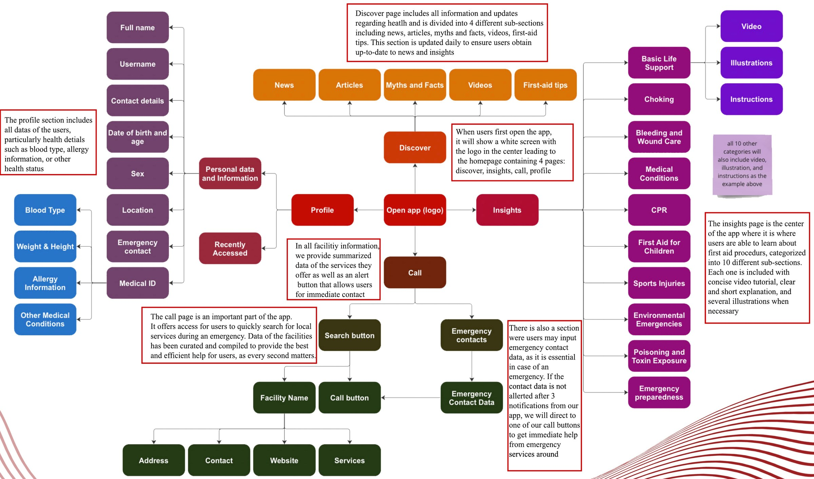
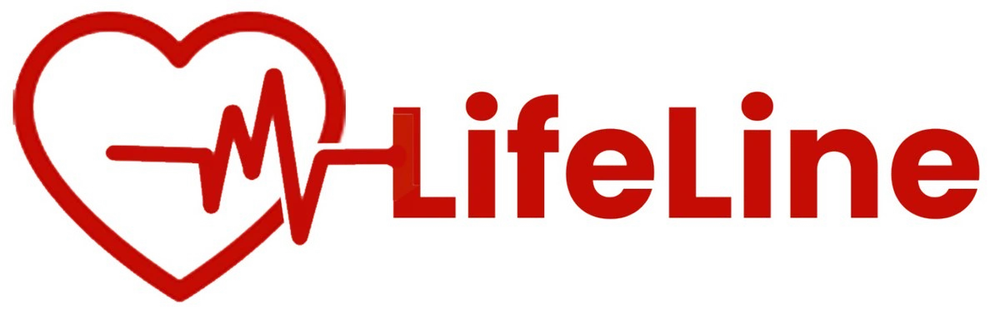
The "golden time" countdown now sits above each procedure, because the decisions on that screen are time-sensitive. Left: before. Right: after.
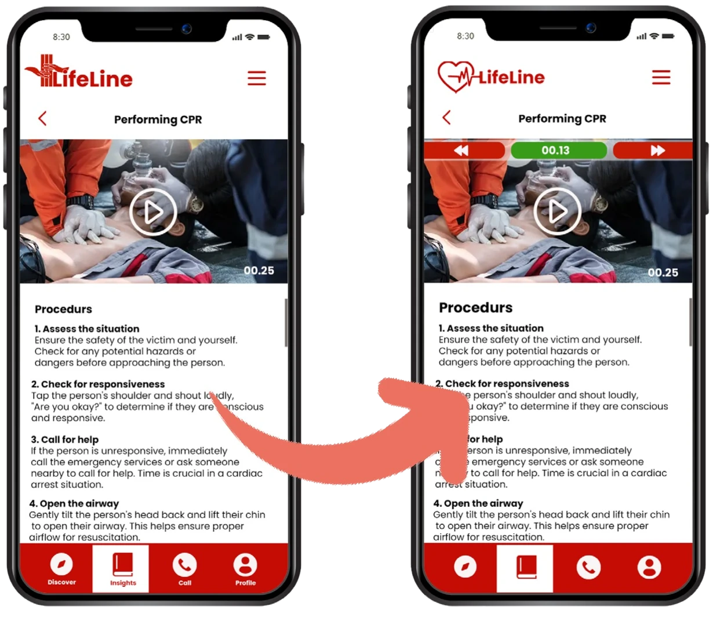
The names under the four icons came off to keep the bar simple and clear.
The first mark was a red cross formed by two hands, with three lines for check, call and care. It became a heart with a pulse line so the symbol reads as the name.
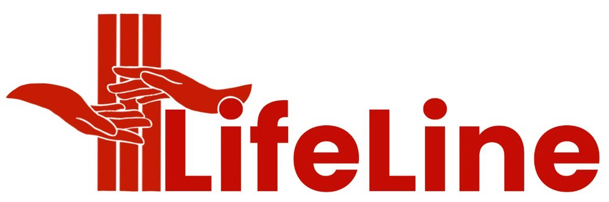
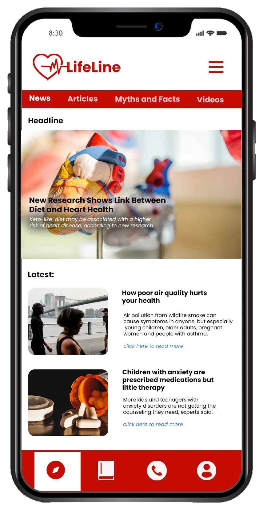
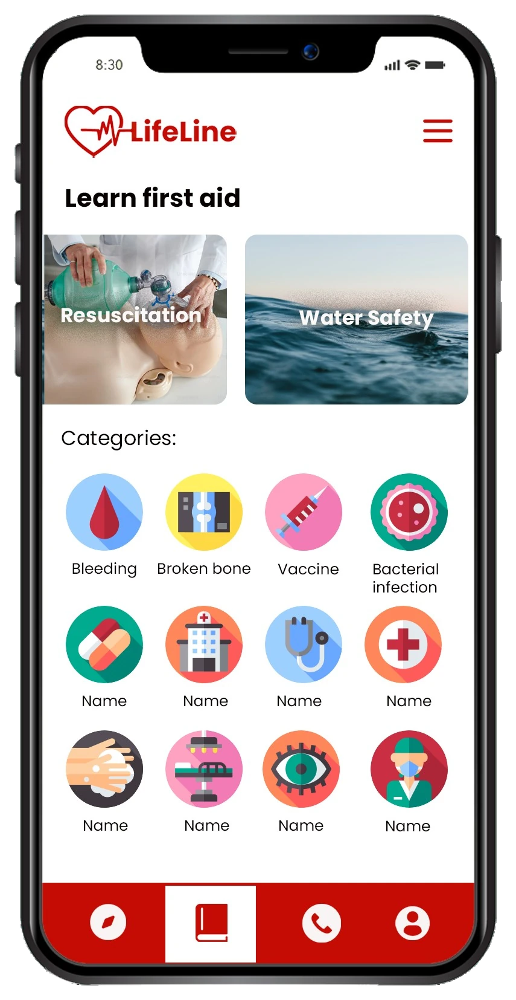
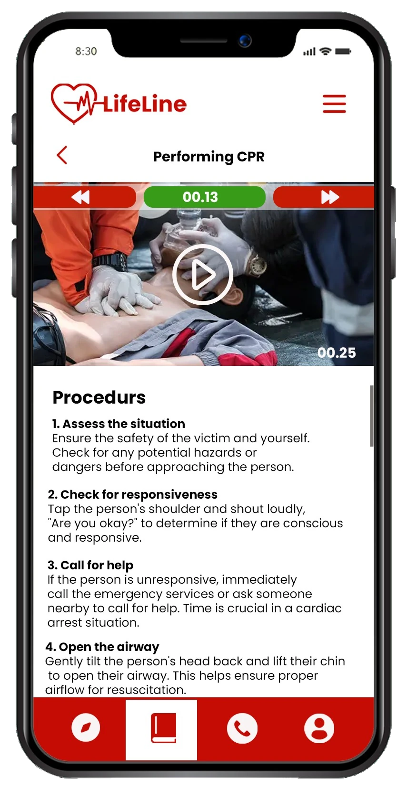
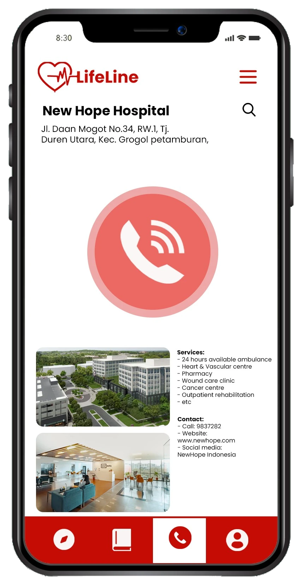
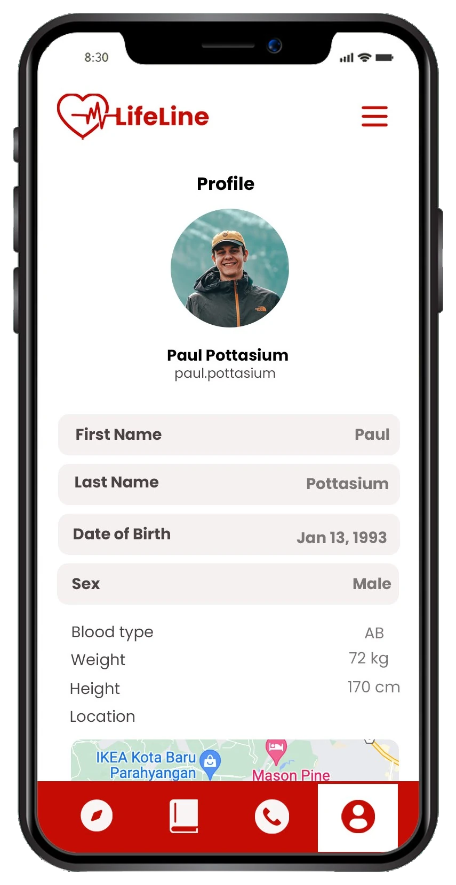